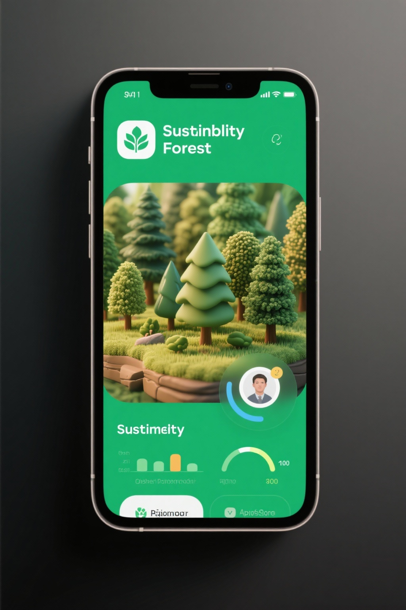
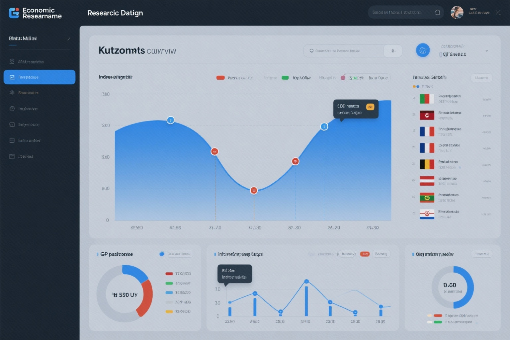

Your Forest iOS App
Full-stack iOS application connecting real-world sustainability choices to virtual forest simulation.
Swift
iOS
Game Design
Click to explore

GIS Spatial Analysis
Comprehensive geospatial analysis platform for environmental monitoring and conservation planning.
R
GIS
Shiny
Click to explore

Economic Research Dashboard
Interactive dashboard analyzing Kuznets Curve hypothesis with comprehensive international data.
Econometrics
Stata
Research
Click to explore